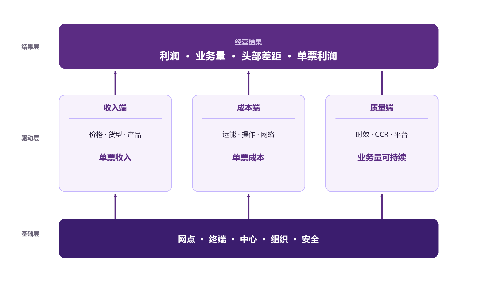

1.1 这套指标到底在管什么
快递网络经营，本质上是在管一条“从客户下单到包裹签收”的价值链：
客户下单 → 网点揽收 → 始发中心分拣 → 干线运输 → 目的中心分拣 → 网点派送 → 客户签收
每一个环节都消耗成本，也每一个环节都影响收入与体验。截图里的指标，就是把这条链上的关键动作，翻译成可以度量、可以比较、可以考核的数字。
可以把整套指标分成五类“经营问题”：
| 经营问题 | 核心指标 | 一句话理解 |
|---|---|---|
| 规模 | 业务量（日均）、头部差距、L4/L5 增量 | 我们做了多少，和第一名差多少 |
| 收入 | 单票收入、单票出港收入、均重、货型、政策、产品 | 每一票卖多少钱，为什么卖这个价 |
| 成本 | 单票运能成本、单次操作成本、单票网络成本 | 每一票花多少钱，花在哪一段 |
| 质量 | 遗失率、破损率、CCR、时效达成率、平台指数 | 客户是否满意，平台是否给流量 |
| 网络 | 负毛利网点、网点质量、共配、终端、城服、组织 | 网络是否健康，未来还有没有后劲 |
这五类问题不是并列的，而是结果与驱动的关系：规模、收入、成本决定利润；质量决定业务量能不能持续；网络决定质量和成本有没有后劲。
1.2 三层结构：结果层、驱动层、基础层
为了不迷失在几十个指标里，建议用“三层楼”来记：

第一层：结果层（屋顶）
- 利润、利润完成率
- 业务量（日均）
- 头部差距
- 单票收入、单票利润
结果层回答的是“这个月经营得怎么样”。它的特点是滞后：等到利润出来，很多事情已经发生了。所以不能只看结果，必须往下拆。
第二层：驱动层（柱子）
- 收入端：均重、货型结构、政策结构、产品结构、目的区域
- 成本端：装载率、路由、票均里程、单次操作成本、人均效能、单票网络成本
- 质量端：时效、CCR、遗失率、破损率、平台指数、网点质量
驱动层回答的是“结果为什么是这样”。它的特点是可干预：价格、路由、排班、装载、派费、培训，都是可以动的。
第三层：基础层（地基）
- 网点分层与 L4/L5 网点
- 共配清理、负毛利网点、高风险网点
- 终端（驿站、快递柜）、城市服务中心
- 分公司基建、无人车
- 组织能力（管幅比、组长大专及以上占比）
- 安全生产
基础层回答的是“明年还能不能这样”。它的特点是慢变量：今天投的终端、修的场地、培养的组长，可能一年后才体现在质量和成本上；但一旦塌陷，结果层会突然恶化。
1.3 七个模块与三条主线
截图中的指标可以归入七个模块，外加“中心运营、直客业务、服务质量”三个专题：
| 模块 | 核心问题 | 关键指标 |
|---|---|---|
| 网络营销 | 量从哪里来，和头部差多少 | 业务量、吨位装载率、L4/L5 网点、头部差距 |
| 网络成本 | 网络段成本有没有下降 | 单票网络成本、分公司单票派送降本、直送占比、线上发薪件量占比 |
| 城市服务中心建设 | 属地经营节点建得怎么样 | 建设数量、经营利润达成率、城服质量得分 |
| 终端建设 | 最后一公里有没有抓手 | 驿站建设、终端指数、入终端渗透率、快递柜格口数与使用率 |
| 分公司建设 | 基建投入有没有回报 | 基建单票降本、基建投入网点数（场地/设备/车辆）、无人车数量 |
| 网络稳定 | 网络风险有没有守住 | 订单拦截率、高风险网点数、共配网点清理数 |
| 网络质量 | 网点服务好不好 | 网点质量得分、虚假签收率、50 分以下网点数 |
| 中心运营（专题） | 分拨中心效率与质量 | 单票运能成本、单次操作成本、人均效能、中心质量得分、安全生产 |
| 直客业务（专题） | 直客能不能既上量又赚钱 | 客户数、业务量、利润、单票利润、应收账款、交件及时率、CCR、破损率、快速理赔 |
| 服务质量（专题） | 客户和平台认不认 | CCR、遗失率、破损率、超时库存率、错分率、漏扫描率、时效达成率、平台指数 |
如果把这些模块再抽象，其实是三条主线：
主线一：规模线。 业务量 → 头部差距 → L4/L5 增量 → 共配清理 → 直客拓展。它回答“怎么把量做上去，且做得有质量”。
主线二：成本线。 单票收入 − 单票运能成本 − 单次操作成本 × 操作次数 − 单票网络成本 = 单票利润。它回答“怎么在不让服务崩掉的前提下，把成本降下来”。
主线三：质量线。 中心操作质量 + 网点服务质量 + 时效 → CCR → 平台指数 → 业务量。它回答“怎么让增长可持续”。
三条线不是平行线，而是互相咬合的齿轮：规模摊薄成本，成本支撑价格，价格影响规模；质量影响平台流量，流量影响规模，规模影响网络密度，密度又影响成本和质量。
1.4 指标方向总表：上升、下降分别意味着什么
这是全书最重要的一张表。先建立“方向感”，后面每一章再展开。
左右滑动查看完整表格
| 指标 | 口径/公式（简） | 上升通常意味着 | 合意方向 | 主要关联 |
|---|---|---|---|---|
| 业务量（日均） | 月累计票量 ÷ 运营天数 | 规模扩大、份额提升；也可能来自低价冲量 | 越高越好，但要看质量 | 装载率、单票成本、头部差距 |
| 头部差距 | 头部企业日均量 − 本公司日均量 | 落后更多，份额被拉开 | 越低越好 | 业务量增速、价格、网络覆盖 |
| 单票收入 | 出港收入 ÷ 出港票量 | 价格提升或货型变重；也可能丢量 | 越高越好，但要保量 | 均重、货型、政策、产品 |
| 单票运能成本 | 运能总成本 ÷ 业务量 | 装载变差、里程变长、单边增多 | 越低越好 | 装载率、路由、票均里程 |
| 单次操作成本 | 中心操作成本 ÷ 操作票数 | 人工/设备/场地效率下降 | 越低越好 | 人均效能、自动化、操作次数 |
| 单票网络成本 | 网络总成本（净额）÷ 业务量 | 派费、末端投入增加，或密度下降 | 越低越好，但不能压垮网点 | 派费、直送、终端、网点质量 |
| 单票利润 | 单票收入 − 三项成本 − 其他 | 盈利能力增强 | 越高越好 | 上述所有收入/成本项 |
| 利润完成率 | 实际利润 ÷ 预算利润 | 超额完成 | 越高越好 | 预算、业务量、单票利润 |
| 均重 | 总重量 ÷ 票量 | 货型变重 | 看情况，有最优区间 | 单票收入、运能成本、装载 |
| 吨位装载率 | 实际载重 ÷ 核定载重 | 重货装载更充分 | 越高越好，但别超载 | 亏吨、单票运能成本 |
| 方量装载率 | 实际体积 ÷ 车厢容积 | 抛货装载更充分 | 越高越好，但别挤压 | 亏方、货型结构 |
| 单车装载票数 | 发出票量 ÷ 用车量 | 同样车次装更多票 | 越高越好 | 票均重量、车型、路由 |
| 直达率 | 直达票量 ÷ 发出票量 | 中转减少、时效提升 | 越高越好，但要看频率 | 中转量、时效、装载率 |
| 单边趟数占比 | 单边趟次 ÷ 总趟次 | 回程空驶增多 | 越低越好 | 单边成本、路由、回程货源 |
| 票均里程 | 总里程 ÷ 票量 | 平均运距变长 | 越低越好（同收入下） | 目的区域、运能成本 |
| 人均效能 | 操作票数 ÷ 作业人数 | 人效提升 | 越高越好 | 单次操作成本、自动化 |
| 管幅比 | 管理单元数 ÷ 管理人员数 | 管理幅度变宽 | 有最优区间 | 网点质量、管理成本 |
| CCR | 投诉票数 ÷ 业务量 × 10000 | 客户不满增加 | 越低越好 | 遗失、破损、时效、服务 |
| 遗失率 | 遗失票数 ÷ 业务量 | 丢失增多 | 越低越好 | 操作、建包、扫描、运输 |
| 破损率 | 破损票数 ÷ 业务量 | 破损增多 | 越低越好 | 包装、分拣、装卸、运输 |
| 时效达成率 | 按承诺签收票数 ÷ 签收票数 | 时效改善 | 越高越好 | 交件、路由、中转、派送 |
| 平台指数 | 平台综合物流评分 | 平台认可度提升 | 越高越好 | 时效、服务、破损、投诉 |
| 网点质量得分 | 网点综合质量评分 | 网点服务改善 | 越高越好 | 负毛利、派费、管幅、培训 |
| 负毛利网点数 | 毛利为负的网点数量 | 网络健康恶化 | 越低越好 | 派费、业务量、成本、罚款 |
| 虚假签收率 | 虚假签收票数 ÷ 派件票数 | 违规增多 | 越低越好 | 网点质量、平台处罚、客诉 |
| 直客单票利润 | 直客利润 ÷ 直客票量 | 直客盈利能力增强 | 越高越好 | 直客价格、服务成本、应收 |
| 应收账款回收率 | 已回款 ÷ 应收 | 回款改善 | 越高越好（100%） | 客户信用、账期、坏账 |
| 共配网点清理数 | 完成清理的共配网点数 | 执行进度推进 | 过程量，越高越说明在推进 | 剩余共配数、网络稳定 |
| 订单拦截率 | 拦截订单 ÷ 风险订单 | 风险拦截更严 | 有最优区间 | 高风险网点、虚假订单 |
1.5 读指标的四个原则
原则一：先结果，后过程。 先看利润、业务量、头部差距，再往下找原因。不要一上来就扎进“单票运能成本为什么涨了 2 分钱”，而先确认“这 2 分钱是否真的影响了利润”。
原则二：先单票，后总额。 总额会被规模掩盖。业务量增长 20%，总成本增长 10%，看起来成本控制得不错；但单票成本可能从 1.80 涨到 1.85，效率其实在下降。单票指标是“剥离规模”的放大镜。
原则三：先结构，后总量。 总量是结果，结构是原因。单票收入下降，可能是价格降了，也可能是轻小件占比上升；单票成本上升，可能是装载率下降，也可能是目的区域变远。不拆结构，就找不到真正的动作。
原则四：先口径，后比较。 比较之前，先确认分子分母是否一致：业务量是出港、进港还是总网？收入含不含派费？成本含不含考核赔付？口径不一致，比较就是自欺欺人。
1.6 本章小结
- 这套指标是一张“经营地图”，不是一堆孤立的数字。
- 结果层看利润、业务量、头部差距；驱动层看收入、成本、质量；基础层看网络、终端、组织、安全。
- 七个模块对应三条主线：规模线、成本线、质量线。
- 每个指标都有方向，但方向不是绝对的：业务量、成本、管幅比、订单拦截率都要看“质量”和“阶段”。
- 读表顺序：结果 → 单票 → 结构 → 效率 → 质量。
下一章，我们从结果层开始，先把“业务量、头部差距、利润、单票收入、单票成本”这五个词彻底讲透。